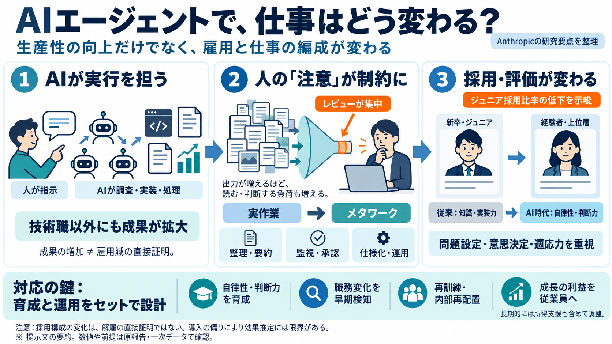

How employment is changing at Anthropic \ Anthropic
These changes have already involved reallocation: employees working at the company for at least a year were 50% more lik…

エージェントで仕事はどう変わる？
Anthropicの研究要点を、採用（特にジュニア層）・生産性の急増・「注意」のボトルネック・メタワークへの移行として整理します。
誤解を避ける
AIで成果が増えても、同じ人数で“能力が上がった”のか、“置換で採用が減った”のかを分けて見る必要があります。さらに、監督・調整（メタワーク）が増えるため、単純な労働置換だけでは説明しきれません。
エージェントの性格
AIエージェントはチャット指示を起点に、調査・実装・進捗管理などを“実行（または補助）”します。これにより成果物が増え、仕事の流れ自体が変わり得ます。
加速する稼働
AIエージェントの稼働時間は、人の稼働時間を上回るペースで拡大したとされます。2026年8月にはインタラクティブなエージェント稼働時間が従業員の約6倍になったと報告されています。
成果物が増える
コーディングだけでなく、契約処理・請求書処理・営業成約など非技術職でも成果が増えたとされます。導入前後で成果指標（追加コード量、成約数）が伸びる傾向も示されています。
さらに同じ従業員・同じ月・同じディレクトリ等で比較し、致命的な品質劣化（例：リバートや削除率の差）が見られにくいことも検証されています。
万能ではない
エージェントは人の入力待ちが多く、出力を読むだけで負荷が発生します。非技術職ですら、勤務時間の半分以上に相当し得ると推計され、人が“読む・判断する”側へ回ります。
出力が増えるほど、レビュー量が増える
判断の遅れがボトルネック化する
役割の移動
社員の仕事は実作業から、出力の整理・監視・仕様化・パイプライン運用へシフトします。エージェント出力が多いほど、この統治・運用の比率が増えると報告されています。
採用の形が変わる
ジュニア技術職の雇用比率が低下したとされます。採用担当は、AIが実装を一部担う前提で、候補者の自律性（autonomy）や判断力（judgment）をより重視するようになったと強調されています。
評価軸の転換
技術職・非技術職の双方で、AI前提の候補者評価の比率が変化していると報告されています。AIが“実装”を担うほど、価値は問題設定・意思決定・適応力へ寄る可能性があります。
企業の手当
企業側の対応として、(i) 従業員利益と企業成長の接続（株式保有）、(ii) AIによる職務変化の早期検知（早期警告システム）、(iii) 外部市場だけでなく内部での再配置体制が挙げられます。
限界も併記
研究は導入者と非導入者を時期比較して推定しますが、ツール導入が非ランダム（重要案件を担当する人ほど導入等）である可能性は残ります。ジュニア採用の低下は示唆される一方で、“必ず解雇が発生した”ことまでは一対一で証明しない点が重要です。
採用構成の変化中心（解雇の直接証明ではない）
導入の偏りで効果推定が歪む余地（残差疑い）
要点まとめ
AIで生産性が上がっても、注意の負荷とメタワークの増加が仕事設計を変えます。ジュニア採用の縮小と評価軸の転換を踏まえ、再訓練や所得支援を含む長期の調整が必要です。
※ 本スライドは提示文の要約に基づくため、数値や前提は原報告・一次データで確認してください。
These changes have already involved reallocation: employees working at the company for at least a year were 50% more lik…
労働市場において、AIエージェントの影響は「非対称性」を示している。アンソロピック経済指数の調査データによると、プログラマーの基本的なコーディング作業の約75%、カスタマーサービス担当者の定型的なフィードバックの70%が、現在ではエージェン…
労働市場において、AIエージェントの影響は「非対称性」を示している。アンソロピック経済指数の調査データによると、プログラマーの基本的なコーディング作業の約75%、カスタマーサービス担当者の定型的なフィードバックの70%が、現在ではエージェン…
Staff may be describing what they experience at work. As discussed further in How Employment is Changing at Anthropic, A…
tradingkey.logo 検索 TradingKey 著者Mario Ma Apr 15, 2026 7:17 AM AIポッドキャスト facebooktwitterlinkedin すべてのコメントを見…